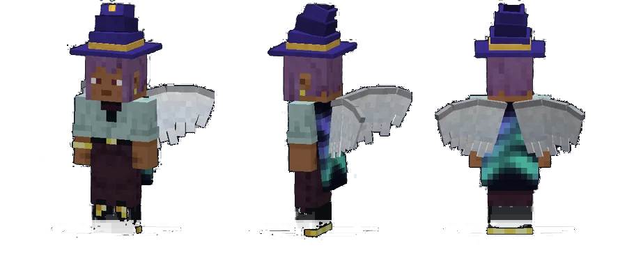

Scappi X Studios
Scappi X Studios is the company that makes VanillaX. VanillaX is a Minecraft client and server-plugin ecosystem by Scappi X Studios, built to add quality-of-life features and cosmetics without breaking server rules.
What Scappi X Studios makes
Everything below is part of VanillaX, the only brand of the studio.
VanillaX Client
A Windows launcher and Fabric client for Minecraft Java Edition, with quality-of-life modules and animated cosmetics. No reach, aim help, X-ray or radar.
See every module → Paper pluginsThe X projects
Server plugins for nations, economy and warfare: NationsX, with its add-ons FactoryX and PassportX, plus CannonX and CavalryX.
All projects → In developmentX Geopol
X Geopol is a Minecraft nations server by Scappi X Studios, running the VanillaX X projects. It is in development.
About X Geopol → RulesMod policy
Which Minecraft client mods are allowed, what each one does, and why. Every VanillaX Client module is checked against this list.
Read the policy →ScappiDoo
Scappi X Studios is the company of ScappiDoo, a Minecraft plugin developer who works on Paper server plugins in Java. Besides VanillaX and the X projects, the studio publishes general tooling plugins for any Paper server: chat, moderation, staff tools and support tickets.

A note on the names
Ready to try VanillaX?
One download, one click, and you are in the game with your cosmetics on.